VISION
WHY THIS PROJECT?
CONNECT TO THE REAL WORLD
Commuting breeds unhappiness. Those with long transit times often suffer from disproportionate pain, stress, obesity, and dissatisfaction. Fast life pace and addiction to the cellphones cause isolation between people, and disconnect them from the real physical world.
Take a short, relaxing interlude during your mundane commute in order to gather your thoughts and feelings before starting your day. Detach from the virtual world, involving in interactions with the environment and people around you.
96SEC
AN INTERACTIVE PUBLIC AMBIENT
THE IDEA
The 96SEC is an interactive ambient design based on the corridor between Hong Kong MTR station to Central MTR station. The length of the walkway is 72m, which takes 96 seconds to travel from one side to the other using the escalator walkway.
Give commuters 96 seconds of peace in an ordinarily stressful environment. Relax the mind in order to think more clearly and productively through an interactive experience. Prevent stress from controlling your state of mind. Interact and connect to the real world, extricating from the loneness.
INTERACTIONS
THE CONTROLS
Each set of interaction control includes a LEAP Motion and a compress air button. There are several giant balloons rolling in this area and the LEAP Motion is used to control the floor landscape so that the balloons will move accordingly. When a balloon lands in certain area, the compress air button will illuminate. Pressing the button triggers the release of compress air, which shoots the balloons to the ceiling. The ceiling will performe lighting effects when the balloons approach.
THE AMBIENT
96SEC
Category:
Embedded Interaction Design
Interactive Ambient/Public Installation
Date:
Spring 2014
Institute/Organization:
Foxlin Architects (US)
MDes Interaction Design, SD, HKPU
Commuting breeds unhappiness. Those with long transit times often suffer from disproportionate pain, stress, obesity, and dissatisfaction. Designed for the corridor between the Hong Kong - Central MTR interchange station where numerous commuters rush through stressfully everyday, 96SEC takes a short, relaxing interlude during your mundane commute in order to gather your thoughts and feelings before starting your day. It gives commuters 96 seconds of relaxation in an ordinarily stressful environment, relaxes the minds in order to think more clearly and productively through an interactive experience, prevents stress from controlling your state of mind. It detaches you from your cellphones, involves you into physical interactions with the real environment and people around you.
Project Team: Akela LO | Michelle MA | Quincey L. DONG | Tommy QUEK
Advisor: Michael A. Fox | Principal of Foxlin Architects
Exhibited as Center Piece at PolyU Design Annual Show June - July 2014 Innovation Gallery, Jockey Club Innovation Tower